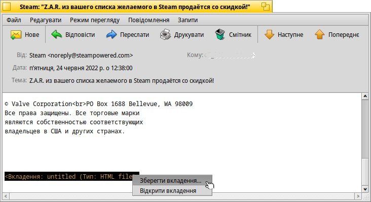
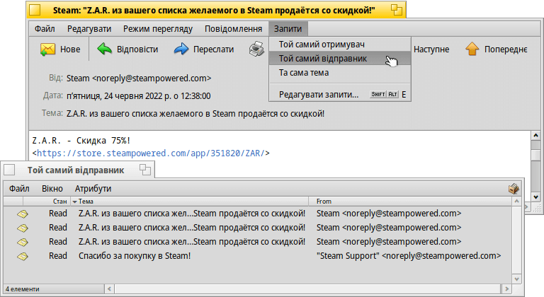
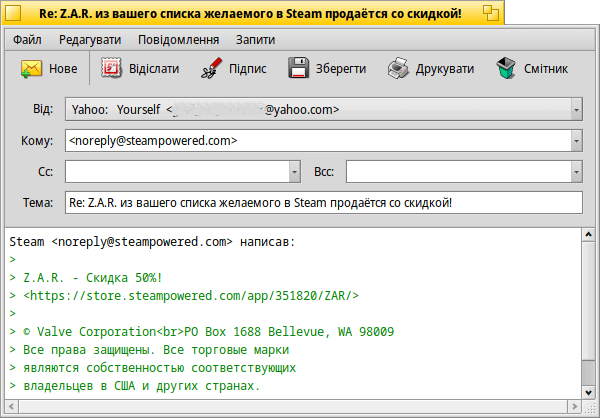
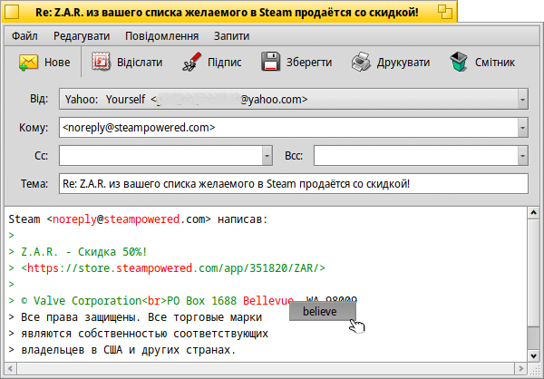
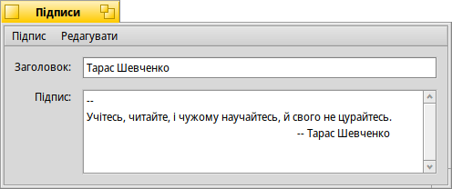
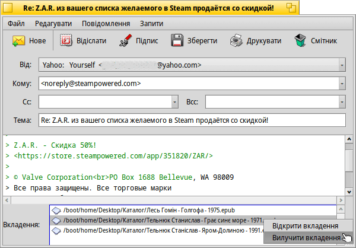
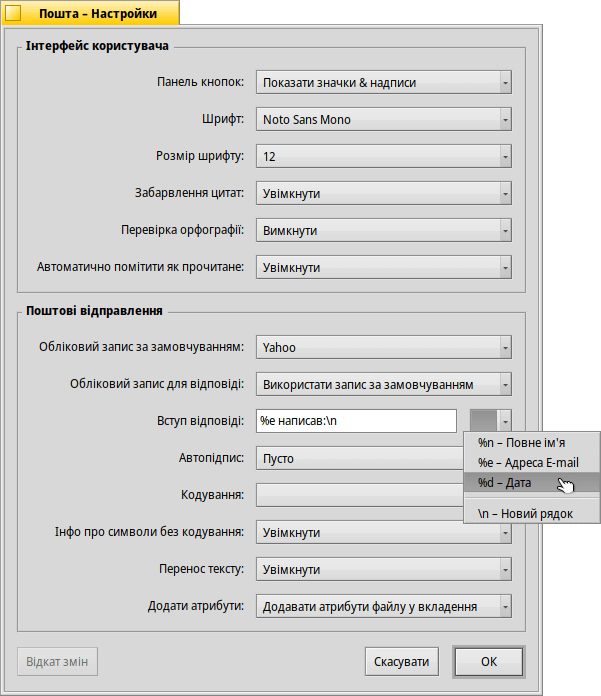

| Індекс |
| Читання повідомлень Створення нових повідомлень Налаштування |
 Mail (Пошта)
Mail (Пошта)
| Deskbar: | ||
| Розташування: | /boot/system/apps/Mail | |
| Налаштування: | ~/config/settings/Mail/ ~/config/settings/Mail/Menu Links/ – Розміщені тут об’єкти з’являються у контекстному меню поштової скриньки ~/config/settings/Mail/signatures/ – Місце для зберігання підписів. ~/config/settings/Mail/status/ – Місце для зберігання статусів, які визначив користувач. |
Mail (Пошта) – це засіб перегляду та редактор електронних поштових повідомлень, який використовується системою Haiku за замовчуванням. Програма не має нічого спільного з власне отриманням та відправкою електронної пошти, які виконує mail_daemon, процес конфігурації якого описаний у розділі E‑mail (E‑пошта).
Ця сторінка є загальним оглядом програми Пошта. Щоб дізнатися більше про те, як працює система електронної пошти Haiku, зверніться до розділу Майстер-клас: Управління поштою .
 Читання повідомлень
Читання повідомлень
Двічі натисніть на файл поштового повідомлення, щоб відкрити його у програмі Пошта. Інтерфейс досить простий:
Зверху знаходиться головне меню та додаткова панель інструментів, під ними – область з важливими атрибутами листа (від кого, кому, дата, тема) а далі – власне текст повідомлення. Якщо лист містить символи, які не можна прочитати або порожній, спробуйте змінити у меню .
Якщо до листа прикріплені файли, вони перераховані в кінці повідомлення. Правий клік миші на одному з них відкриє контекстне меню з пунктами і . Ви можете перетягнути файл на робочий стіл або в інше вікно Tracker.
Більшість пунктів меню та панелі інструментів є досить зрозумілими, тому ми зосередимося лише на основних моментах.
Файл
Коли Ви закриваєте вікно нового вхідного повідомлення, його статус зазвичай змінюється з «Нове» на «Прочитане». Але Ви можете встановити й інші статуси, вибравши статус у підменю . У цьому підменю Ви знайдете пункт для створення своїх власних статусів, які зберігаються в ~/config/settings/Mail/status/.
Редагувати
У цьому меню Ви знайдете пункт, який відкриває поштової програми (дивіться нижче) та пункт , який відкриває панель налаштувань E-mail для управління Вашими акаунтами.
Режим перегляду
Ці два пункти знадобляться Вам дуже рідко, якщо взагалі знадобляться:
| ALT H | Показує повний заголовок листа, якщо Вам, наприклад, потрібно відстежити шлях поштового повідомлення. | ||
| Відображає повідомлення у необробленому вигляді, тобто з усіма керуючими символами і, наприклад, без розфарбовування лапок або URL-адрес. |
Повідомлення
Різні варіанти відповіді на повідомлення можуть вимагати короткого пояснення.
| ALT R | Стандартна відповідь серверу, який надіслав Вам листа. ПРИМІТКА: У випадку з повідомленням через список розсилки, відповідь зазвичай надсилається списку розсилки, а не особі, яка написала повідомлення! | ||
| OPT ALT R | У цьому випадку, повідомлення надсилається безпосередньо і тільки особі, зазначеній в атрибуті «Від» (From). | ||
| SHIFT ALT R | Відповідь ініціатору повідомлення та всім іншим одержувачам оригінального листа (з копіями). |
Пункти меню , та знову ж таки не потребують пояснень.
Коли Ви відкриваєте лист з вікна Tracker або з вікна результатів запиту, Ви зможете переходити від одного повідомлення до іншого використовуючи пункти меню і .
Пункт меню збирає всі адреси електронної пошти з заголовка і власне тексту листа у підменю. Вибравши у цьому підменю адресу, Ви відкриєте програму People (Контакти), щоб заповнити і зберегти контактну інформацію.
Запити
Це меню містить запити, які показують усі листи, пов'язані з поточним відкритим листом. Вибираючи пункти , або , Ви отримаєте запити, які покажуть усі відповідні листи:

Створення нових повідомлень
Нове поштове повідомлення створюється за допомогою команди меню або відповідного значка на панелі інструментів відкритого листа. Або просто запустіть програму Пошта або виберіть пункт у контекстному меню значка поштової скриньки на панелі задач Deskbar.
Вікно дуже схоже на те, що Ви бачите при читанні пошти. Пункти меню та елементи панелі інструментів дещо відрізняються, а текстові поля потрібно заповнити адресою електронної пошти одержувача, темою листа тощо.
– це скорочення від анахронічного терміну «carbon copy», що означає, що копії Вашого листа будуть надіслані переліченим особам. Відмінність від простого переліку адрес у полі «Кому» полягає у тому, що Ви не звертаєтеся безпосередньо до людей, яким надсилаєте копії, тим самим сигналізуючи, що Ви, ймовірно, не очікуєте від них відповіді.
означає «blind carbon copy» , це практично те саме, що й «Cc», тільки одержувачі не бачать адреси один одного.
Ви можете ввести кілька одержувачів, розділяючи їхні адреси комою. , і – це списки, які розкриваються. Вони містять усі адреси електронної пошти у Вашій системі, знайдені за запитом до файлів Контакти. Атрибут «Group» контактів сортує їх у відповідних підменю.
Знову ж таки, ми зосередимося на найцікавіших функціях меню.
Файл
За допомогою пункту меню Ви можете зберегти свою роботу на деякий час і повернутися до неї пізніше. Щоб завантажити розпочатий лист знову, виберіть його у підменю , у якому буде показано результат запиту для усіх листів зі статусом «Чернетка».
Редагувати
Пункти меню і або їхні відповідні комбінації клавіш ALT + / - використовуються для додавання/зняття рівня цитати шляхом зміни кількості символів «>» перед цитатою. Просто виділіть текст у рядках, які Ви хочете зробити цитатою або відмінити цитату і виберіть цей пункт меню.
Пункт наразі пропонує лише виправлення англійських текстів, позначаючи неправильні або невідомі слова червоним кольором. Правий клік миші на такому слові відкриває контекстне меню з пропозиціями виправити слово або замінити його.
Далі знову є пункт, який відкриває поштової програми (дивіться нижче) і пункт , який відкриває панель налаштувань E-mail для управління Вашими акаунтами.
Повідомлення
За допомогою пункту меню Ви можете додавати заздалегідь визначені тексти в кінець повідомлення. У підменю Ви можете вибрати певний текст або .
Ви створюєте нові або редагуєте існуючі підписи за допомогою пункту меню , який відкриває вікно де Ви вводите сам текст і заголовок Вашого нового підпису. У цьому вікні, у меню Ви знайдете пункти певний підпис або чи поточний підпис. Підписи слід зберігати в ~/config/settings/Mail/signatures.
Використовуйте пункти меню і , щоб додати/вилучити файли як вкладення. Ви можете перетягувати файли з вікна Tracker. Проте будьте обережні, щоб не скинути текстові файли безпосередньо у секцію з текстом листа, інакше вони будуть вставлені як текст.
Список вкладених файлів розміщається у нижній частині вікна програми під текстом листа. Ви можете видалити файл, відкривши контекстне меню або виділивши його і натиснувши клавішу DEL.
Запити
Як і при читанні листів, це меню містить запити, які показують усі листи, пов'язані з листом, який Ви зараз пишете. Вибираючи пункти , або , Ви отримаєте запити, які покажуть усі відповідні листи.
Налаштування

Налаштування пошти складаються з двох частин:
Інтерфейс користувача
| Параметри відображення надписів під значками або повного приховування панелі інструментів. | ||
| Встановлює тип шрифту для тексту у листах електронної пошти. | ||
| Встановлює розмір шрифту. | ||
| Забарвлює різні рівні цитат. | ||
| Вмикає/вимикає перевірку орфографії під час запуску. | ||
| Якщо Ви закриєте електронний лист зі статусом «New», Ви можете автоматично позначити його як «Read». |
Поштові відправлення
| Якщо у Вас є декілька облікових записів електронної пошти, тут вказується, який з них буде використовуватися за замовчуванням при створенні нового поштового повідомлення. | ||
| Коли Ви відповідаєте на лист, Ви можете вибрати параметр , встановлений у списку вище, або використати , тоді лист буде надіслано з того самого облікового запису, з якого надійшло оригінальне повідомлення. | ||
Цей текст вставляється перед процитованим текстом у Вашій відповіді. Ви можете використовувати різні змінні зі списку поруч з текстовим полем. Приклад: «Hello %n!\n\nOn %d you wrote:\n» буде мати вигляд:
Hello Dr. Hawking! On Mon, 18 Jan 1998 02:55:16 +0800 you wrote: > so thanks again for the inspiration concerning the cosmological constant. > ...and the rest of the quoted text following... | ||
| Автоматично додає підпис у кінець листа. | ||
| Встановлює кодування за замовчуванням. | ||
| Якщо Ваш лист містить символи, які не можуть бути закодовані за допомогою встановленого методу кодування, Ви можете увімкнути попередження про це. Це дасть Вам можливість змінити кодування перед відправленням. Інакше, символи без кодування будуть замінені символами заміщення (прямокутниками). | ||
| Вставляє переноси рядка через кожні 76 символів, що полегшує читання листів. | ||
| Ви можете надіслати BFS атрибути файлу разом із вкладеннями. Це добре для інших користувачів Haiku, оскільки вони отримають «повний» файл (згадайте про атрибути виконавця, альбому, назви MP3-файлів) але може збити з пантелику (або навіть викликати підозру) інших користувачів, які будуть дивуватися, що це за додаткові вкладення «BeOS Attributes»… Якщо Ви вирішуєте не надсилати атрибути разом із вкладеннями, не забудьте зробити архіви файлів перед надсиланням, інакше Ви видалите атрибути BFS. |